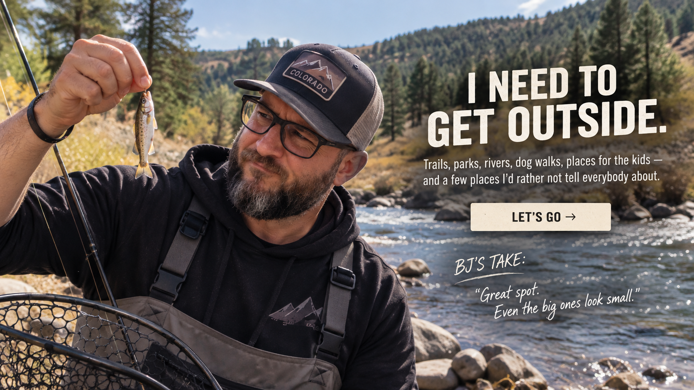

I've got a couple hours.
Grab the rods. Don't overthink it.
Wolf Lake
Quail Lake
BJ'S COLORADO SPRINGS OUTDOOR GUIDE
Fishing, trails, parks, golf and places worth burning a Saturday. These are places I actually go or would send a friend.

PICK YOUR LEVEL OF EFFORT
Some days you have two hours. Some days you're willing to disappear into the mountains until dark. This isn't every outdoor destination around Colorado Springs. It's my list.
FISHING
Fishing around Colorado Springs is weird. Where I'd send you depends almost entirely on whether you've got two hours or the whole damn day.
Grab the rods. Don't overthink it.
A little driving, but we're not turning this into an expedition.
Pack some food, leave early and don't make dinner plans.
This isn't the quick option. That's the point.
Please refer to the enormous trout I'm holding at the top of this page.
HIKING & TRAILS
You don't need to drive three hours into the mountains to find a great trail. Some of my favorites are right here.
Great trails, canyon scenery and plenty of elevation.
One of my go-to Colorado Springs trail areas.
Easy to get to, lots of trail options and classic north-side scenery.
PARKS & OPEN SPACE
Sometimes you just want somewhere beautiful to wander around, take the family or kill an afternoon.
Trees, trails and a great place to spend an easy afternoon.
One of the strangest and coolest landscapes near Colorado Springs.
GOLF
I'm not promising you'll play well. I'm just telling you where I'd tee it up.
This is home base.
Another one on my Colorado Springs list.
City golf and a solid option for getting a round in.
Good option when you're looking for something a little different.
GET OUT OF TOWN
Colorado Springs is home, but sometimes the right move is getting in the car and disappearing for the day.
Mountains, river, food and plenty of reasons to burn an entire Saturday.
High elevation, old Colorado and a town that still feels like somewhere.
Head south, explore town and make a day out of it.
NEED ANOTHER IDEA?
Fishing question, trail question, neighborhood question or house question — I'm pretty easy to find.
Contact BJ